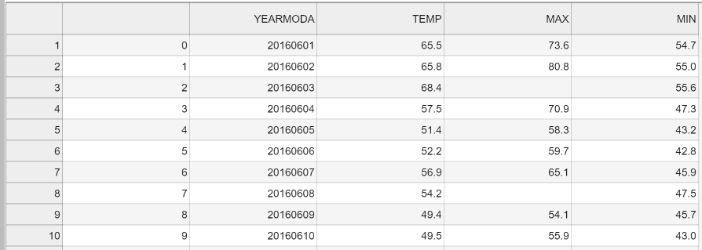
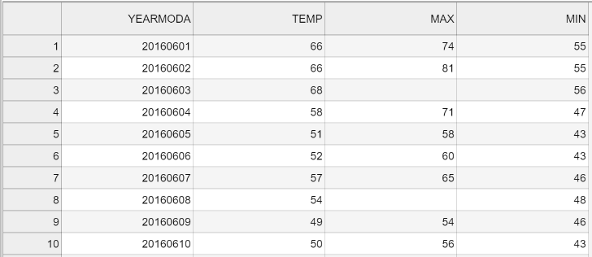

Getting started with data analysis#
What is pandas?#
The pandas Python library [1] is a easy-to-use but powerful data analysis toolkit. It is a mature data analytics framework that is widely used among different fields of science. The development of pandas started in 2008 and it is now maintained by an active developer community (McKinney, 2022).
Pandas is a “high-level” package, which means that it makes use of several other packages in the background. It combines the performance of powerful Python libraries such as NumPy [2], matplotlib [3] and SciPy [4].
One of the most useful features of pandas is its ability to interact with numerous data formats. It supports reading and writing data e.g. from/to:
CSV
JSON
HTML
MS Excel
HDF5
Stata
SAS
Python Pickle format
SQL (Postgresql, MySQL, Oracle, MariaDB, etc.)
For a full list of supported file formats and other features, see the official pandas documentation and reference guide [5].
Pandas data structures#
In pandas, table-like data are stored in two-dimensional DataFrame objects with labeled rows and columns. The pandas DataFrame was originally inspired by data frames that are in-built in the R programming language. You can think of the pandas DataFrame as a programmable spreadsheet. One-dimensional sequences of values are stored in pandas Series. One row or one column in a pandas DataFrame is actually a pandas Series. You can think of a pandas Series as a clever list. These pandas structures incorporate a number of things we’ve already encountered earlier in this book, such as indices, data stored in a collection, and data types.

Figure 3.1. Illustration of pandas DaraFrame and pandas Series data structures. Pandas DataFrame is a 2-dimensional data structure used for storing and mainpulating table-like data (data with rows and columns). Pandas Series is a 1-dimensional data structure used for storing and manipulating an sequence of values.
As you can see from Figure 3.1, both the DataFrame and Series in pandas have an index that can be used to select values, but they also have column labels to identify columns in DataFrames. In the next sections, we will use many of these features to explore real-world data and learn some useful data analysis procedures. For a comprehensive overview of pandas data structures, we recommend you to have a look at pandas online documentation about data structures [6] as well as Chapter 5 in McKinney, 2022.
Reading tabular data#
In the following sections, we will learn how to read data from a text file (“Kumpula-June-2016-w-metadata.txt”) which contains weather observations from Kumpula, Helsinki (Finland). The data were retrieved from NOAA climate database [7] and it contains observed daily mean, minimum, and maximum temperatures from June 2016, recorded by a weather observation station in Kumpula. The file includes altogether 30 rows of observations (one per day). The first fifteen rows in the file look like following:
# Data file contents: Daily temperatures (mean, min, max) for Kumpula, Helsinki
# for June 1-30, 2016
# Data source: https://www.ncdc.noaa.gov/cdo-web/search?datasetid=GHCND
# Data processing: Extracted temperatures from raw data file, converted to
# comma-separated format
#
# David Whipp - 02.10.2017
YEARMODA,TEMP,MAX,MIN
20160601,65.5,73.6,54.7
20160602,65.8,80.8,55.0
20160603,68.4,,55.6
20160604,57.5,70.9,47.3
20160605,51.4,58.3,43.2
20160606,52.2,59.7,42.8
Now as we have familiarized ourselves with the data, we can continue and see how to read the data using pandas. Let’s start by importing the pandas module. It is customary to import pandas as pd:
import pandas as pd
Next, we will read the input data file and store the contents of that file into a variable called data Using the read_csv() function:
data = pd.read_csv("data/Kumpula-June-2016-w-metadata.txt")
Our input file is a comma-delimited file, meaning that the columns in the data are separted by commas (,) on each row. The read_csv() function uses comma as the default delimiter, hence we did not need to specify it separately in the command above. If all went as planned, you should now have a new variable data in memory that contains the input data.
It is quite common to have some other character instead of comma separating the columns from each other. The read_csv() in pandas is a generic function for reading text-based data files, supporting files separated by commas, spaces, or other common separators. The sep parameter can be used to specify which character is used as a delimiter. For instance sep=';', would assume that the columns in the data file are delimited with semicolon (;). For a full list of available parameters, please refer to the pandas read_csv() documention [8], or run help(pd.read_csv).
Pandas has also several functions for parsing input data from different formats. For example, reading Excel files can be easily done by using a function read_excel(). Another useful function is read_pickle() that reads data stored in the Python pickle format. Check out the pandas documentation about input and output tools [9] for more details about reading data.
Let’s check the the contents of our data. You can print the contents of a DataFrame (or a snippet of it) simply by calling data. However, quite often you want to check only n-number of first (or last) rows in your data. For doing that, we can use the head() method of the pandas DataFrame object that will, by default, return the first 5 rows of the DataFrame. You can return any number of rows by adding a number inside the parentheses, such as 10 which will return the first ten rows of data.
data.head(10)
| # Data file contents: Daily temperatures (mean | min | max) for Kumpula | Helsinki | |
|---|---|---|---|---|
| 0 | # for June 1-30 | 2016 | NaN | NaN |
| 1 | # Data source: https://www.ncdc.noaa.gov/cdo-w... | NaN | NaN | NaN |
| 2 | # Data processing: Extracted temperatures from... | converted to | NaN | NaN |
| 3 | # comma-separated format | NaN | NaN | NaN |
| 4 | # | NaN | NaN | NaN |
| 5 | # David Whipp - 02.10.2017 | NaN | NaN | NaN |
| 6 | YEARMODA | TEMP | MAX | MIN |
| 7 | 20160601 | 65.5 | 73.6 | 54.7 |
| 8 | 20160602 | 65.8 | 80.8 | 55.0 |
| 9 | 20160603 | 68.4 | NaN | 55.6 |
Similarly, tail() will return the last 5 rows of the DataFrame.
data.tail()
| # Data file contents: Daily temperatures (mean | min | max) for Kumpula | Helsinki | |
|---|---|---|---|---|
| 32 | 20160626 | 69.6 | 77.7 | 60.3 |
| 33 | 20160627 | 60.7 | 70.0 | NaN |
| 34 | 20160628 | 65.4 | 73.0 | 55.8 |
| 35 | 20160629 | 65.8 | 73.2 | NaN |
| 36 | 20160630 | 65.7 | 72.7 | 59.2 |
The first lines of the dataframe look a bit weird. NaN stands for “not a number”, and might indicate some problem with reading in the contents of the file. Plus, we expected about 30 lines of data, but the index values go up to 36 when we print the last rows of the data variable. Looks like we need to investigate this further.
As we can observe, there are some metadata at the top of the file giving basic information about its contents and source. This isn’t data we want to process, so we need to skip over that part of the file when we load it. Here are the 8 first rows of data in the text file (note that the 8th row is blank):
# Data file contents: Daily temperatures (mean, min, max) for Kumpula, Helsinki
# for June 1-30, 2016
# Data source: https://www.ncdc.noaa.gov/cdo-web/search?datasetid=GHCND
# Data processing: Extracted temperatures from raw data file, converted to
# comma-separated format
#
# David Whipp - 02.10.2017
Fortunately, skipping over rows is easy to do when reading data with pandas. We just need to add the skiprows parameter when we read the file, listing the number of rows to skip (8 in this case). Let’s try reading the datafile again, and this time defining the skiprows parameter.
data = pd.read_csv("data/Kumpula-June-2016-w-metadata.txt", skiprows=8)
Let’s check how the data looks like now:
data.head()
| YEARMODA | TEMP | MAX | MIN | |
|---|---|---|---|---|
| 0 | 20160601 | 65.5 | 73.6 | 54.7 |
| 1 | 20160602 | 65.8 | 80.8 | 55.0 |
| 2 | 20160603 | 68.4 | NaN | 55.6 |
| 3 | 20160604 | 57.5 | 70.9 | 47.3 |
| 4 | 20160605 | 51.4 | 58.3 | 43.2 |
data.tail()
| YEARMODA | TEMP | MAX | MIN | |
|---|---|---|---|---|
| 25 | 20160626 | 69.6 | 77.7 | 60.3 |
| 26 | 20160627 | 60.7 | 70.0 | NaN |
| 27 | 20160628 | 65.4 | 73.0 | 55.8 |
| 28 | 20160629 | 65.8 | 73.2 | NaN |
| 29 | 20160630 | 65.7 | 72.7 | 59.2 |
Looks good! We seem to have 30 rows of data (index running from 0 to 30), and meanigful column names and values.
Note that pandas DataFrames have labelled axes (rows and columns). In our sample data, the rows labeled with an index value (0 to 29), and columns labelled YEARMODA, TEMP, MAX, and MIN. Later on, we will learn how to use these labels for selecting and updating subsets of the data.
It is also possible to read only specific columns from the data when using the read_csv() function. You can achieve this using the usecols parameter when reading the file which accepts a list of column names that will be included in the resulting DataFrame. Also positional indices (e.g. [0, 1]) corresponding the position of the column in the file can be used to specify which columns should be read. For additional details, see the pandas read_csv() documention. Next, we will read the file Kumpula-June-2016-w-metadata.txt again and store its contents into a new variable called temp_data. In this case, we will only read the columns YEARMODA and TEMP, meaning that the new variable temp_data should have 30 rows and 2 columns:
temp_data = pd.read_csv(
"data/Kumpula-June-2016-w-metadata.txt", skiprows=8, usecols=["YEARMODA", "TEMP"]
)
temp_data.head()
| YEARMODA | TEMP | |
|---|---|---|
| 0 | 20160601 | 65.5 |
| 1 | 20160602 | 65.8 |
| 2 | 20160603 | 68.4 |
| 3 | 20160604 | 57.5 |
| 4 | 20160605 | 51.4 |
As a result, we now have only two columns instead of the original four. Using the usecols function to limit the number of columns can be useful when having data files with possibly tens or even hundreds of columns. Typically you are not interested in all of them, but you want focus on only a few important ones which you can select already when reading the data.
Writing data to a file#
Naturally, it is also possible to write the data from pandas to a file. Pandas supports many common output formats such as CSV files, MS Excel, xml and others. For full details about supported file formats and writer functions, see the pandas i/o documentation [9]. We will store our data back into a csv-file called Kumpula_temp_results_June_2016.csv.
# define output filename
output_fp = "Kumpula_temps_June_2016.csv"
# Save dataframe to csv
data.to_csv(output_fp, sep=",")

Figure 3.2. The output CSV file opened in JupyterLab.
Figure 3.2 shows the output file. As we can see, the first column contains the index value without any column name. Also the temperature values are represented as floating point number with a presision of 1 decimal.
Let’s see how we can modify these aspects of the output file using pandas and save the data again without the index, and with zero decimals. Omitting the index can be achieved using the index=False parameter. Decimal precision can be specified using the float_format parameter. Format text "%.0f" will set decimal precision to zero (while "%.2f" would set it to 2 decimals and so on).
# define output filename
output_fp2 = "Kumpula_temperatures_integers_June_2016.csv"
# Save dataframe to csv
data.to_csv(output_fp2, sep=",", index=False, float_format="%.0f")

Figure 3.3. The formatted output CSV file opened in JupyterLab.
Figure 3.3 shows the “cleaner” output file that lacks the index column and temperature values are rounded to integers.
DataFrame properties#
Now we will continue exploring the full dataset that we have stored in the variable data. A normal first step when you load new data is to explore the dataset a bit to understand how the data is structured, and what kind of values are stored in there. Let’s start by checking the size of our DataFrame. We can use the len() function similar to the use with lists to check how many rows we have:
len(data)
30
We can also get a quick sense of the size of the dataset using the shape. It returns a tuple with the number of rows as the first element and the number of columns as the second element:
data.shape
(30, 4)
Here we see that our dataset has 30 rows and 4 columns, just as we saw above when printing out the entire DataFrame. Pay attention that we do not use parentheses after the word shape when accessing attributes. The shape in here is one of the several attributes related to a pandas DataFrame object. Attributes are typically used to store useful information (or metadata) about the object at hand. We will see many more examples of these throughout the book.
Let’s also check the column names we have in our DataFrame (yes, it is an attribute as well!). We already saw the column names when we checked the 5 first rows using data.head(), but often it is useful to access the column names directly. You can check the column names by calling data.columns (returns an index object that contains the column labels) or data.columns.values:
data.columns.values
array(['YEARMODA', 'TEMP', 'MAX', 'MIN'], dtype=object)
We can also find information about the row identifiers using the index attribute:
data.index
RangeIndex(start=0, stop=30, step=1)
Here we see how the data is indexed, starting at 0, ending at 30, and with an increment of 1 between each value. This is basically the same way in which Python lists are indexed, however, pandas allows also other ways of identifying the rows. DataFrame indices could, for example, be character strings, or date objects. We will learn more about resetting the index later. What about the data types of each column in our dataFrame? We can check the data type of all columns at once using pandas.DataFrame.dtypes:
# Print data types
data.dtypes
YEARMODA int64
TEMP float64
MAX float64
MIN float64
dtype: object
Here we see that YEARMODA is an integer value (with 64-bit precision; int64), while the other values are all decimal values with 64-bit precision (float64).
Question 3.1#
How would you print out the number of columns in our DataFrame?
Show code cell content
# Solution
len(data.columns)
4
Selecting columns#
When conducting data analysis, it is very common that you want to choose certain columns from the data for further processing. We can select specific columns based on the column values. The basic syntax is dataframe[value], where value can be a single column name, or a list of column names. Let’s start by selecting two columns, 'YEARMODA' and 'TEMP':
selection = data[["YEARMODA", "TEMP"]]
selection.head()
| YEARMODA | TEMP | |
|---|---|---|
| 0 | 20160601 | 65.5 |
| 1 | 20160602 | 65.8 |
| 2 | 20160603 | 68.4 |
| 3 | 20160604 | 57.5 |
| 4 | 20160605 | 51.4 |
Let’s also check the data type of this selection:
type(selection)
pandas.core.frame.DataFrame
As we can see, the subset is still a pandas DataFrame, and we are able to use all the methods and attributes related to a pandas DataFrame also with this subset. For example, we can check the shape:
selection.shape
(30, 2)
We can also access a single column of the data based on the column name:
data["TEMP"].head()
0 65.5
1 65.8
2 68.4
3 57.5
4 51.4
Name: TEMP, dtype: float64
What about the type of the column itself?
type(data["TEMP"])
pandas.core.series.Series
Each column (and each row) in a pandas data frame is indeed a pandas Series. Notice that you can also retreive a column using a different syntax data.TEMP. This syntax works only if the column name is a valid name for a Python variable (e.g. the column name should not contain whitespace). The syntax data["column"] works for all kinds of column names, so we recommend using this approach.
Unique values#
Sometimes it is useful to extract the unique values that you have in your column. We can do that by using unique() method:
data["TEMP"].unique()
array([65.5, 65.8, 68.4, 57.5, 51.4, 52.2, 56.9, 54.2, 49.4, 49.5, 54. ,
55.4, 58.3, 59.7, 63.4, 57.8, 60.4, 57.3, 56.3, 59.3, 62.6, 61.7,
60.9, 61.1, 65.7, 69.6, 60.7, 65.4])
As a result we get an array of unique values in that column. We can also directly access the number of unique values using the nunique() method:
print(
"There were",
data["TEMP"].nunique(),
"days with unique mean temperatures in June 2016.",
)
There were 28 days with unique mean temperatures in June 2016.
Descriptive statistics#
pandas DataFrame and Series contain useful methods for getting summary statistics. Available methods include mean(), median(), min(), max(), and std() (the standard deviation). The statistics can be calculated on a Series level (a single column) or getting the statistics for all columns at once for the whole DataFrame. To check e.g. the mean temperature in our input data, i.e. focusing on a single column (Series), we can do following:
data["TEMP"].mean()
59.730000000000004
The output in this case will be a single floating point number presenting the mean temperature, 59.73 Fahrenheits. To get the mean statistics for all columns in the DataFrame, we can call the mean() in a similar manner, but without specifying the column name:
data.mean()
YEARMODA 2.016062e+07
TEMP 5.973000e+01
MAX 6.804074e+01
MIN 5.125714e+01
dtype: float64
Notice that in this case, the result is Series showing the mean values for each column. For an overview of the basic statistics for all attributes in the data, we can use the describe() method:
data.describe()
| YEARMODA | TEMP | MAX | MIN | |
|---|---|---|---|---|
| count | 3.000000e+01 | 30.000000 | 27.000000 | 28.000000 |
| mean | 2.016062e+07 | 59.730000 | 68.040741 | 51.257143 |
| std | 8.803408e+00 | 5.475472 | 6.505575 | 5.498985 |
| min | 2.016060e+07 | 49.400000 | 54.100000 | 41.700000 |
| 25% | 2.016061e+07 | 56.450000 | 64.650000 | 46.975000 |
| 50% | 2.016062e+07 | 60.050000 | 69.100000 | 53.100000 |
| 75% | 2.016062e+07 | 64.900000 | 72.050000 | 55.600000 |
| max | 2.016063e+07 | 69.600000 | 80.800000 | 60.300000 |
As a result, we get the number of values that are not None for each column (count) as well as the basic statistics and quartiles (min, 25%, 50%, 75% and max). It is also possible to get other DataFrame specific information, such as the index dtype and columns, non-null values and memory usage by calling info():
data.info()
<class 'pandas.core.frame.DataFrame'>
RangeIndex: 30 entries, 0 to 29
Data columns (total 4 columns):
# Column Non-Null Count Dtype
--- ------ -------------- -----
0 YEARMODA 30 non-null int64
1 TEMP 30 non-null float64
2 MAX 27 non-null float64
3 MIN 28 non-null float64
dtypes: float64(3), int64(1)
memory usage: 1.1 KB
Different ways of constructing pandas objects#
Most often we create pandas objects by reading in data from an external source, such as a text file. Here, we will briefly show different ways how you can create pandas objects from Python objects (lists and dictionaries). If you have a very long lists of numbers, creating a pandas Series (or numpy.array) will allow you to interact with these values more efficiently in terms of computing time that using and working with a pure Python list. This is how you can create a pandas Series from a list:
number_series = pd.Series([4, 5, 6, 7.0])
print(number_series)
0 4.0
1 5.0
2 6.0
3 7.0
dtype: float64
Note that Pandas is smart about the conversion, detecting a single floating point value (7.0) and assigning all values in the Series the data type float64. If needed, you can also set a custom index when creating the object:
number_series = pd.Series([4, 5, 6, 7.0], index=["a", "b", "c", "d"])
print(number_series)
a 4.0
b 5.0
c 6.0
d 7.0
dtype: float64
type(number_series)
pandas.core.series.Series
How about combining several lists and construct a DataFrame from them? Certainly. Let’s see how we can convert lists into a pandas DataFrame. Let’s first create a few lists having the same number of items each:
stations = ["Hanko", "Heinola", "Kaisaniemi", "Malmi"]
latitudes = [59.77, 61.2, 60.18, 60.25]
longitudes = [22.95, 26.05, 24.94, 25.05]
Now we can create a pandas DataFrames by using the pandas.DataFrame constructor and passing a Python dictionary {"column_1": list_1, "column_2": list_2, ...} to it, indicating the structure of our data:
new_data = pd.DataFrame(data={"station": stations, "lat": latitudes, "lon": longitudes})
new_data
| station | lat | lon | |
|---|---|---|---|
| 0 | Hanko | 59.77 | 22.95 |
| 1 | Heinola | 61.20 | 26.05 |
| 2 | Kaisaniemi | 60.18 | 24.94 |
| 3 | Malmi | 60.25 | 25.05 |
It is also possible to create pandas DataFrame from a list of dictionaries. Hence, this approach is quite similar as the previous example, but we organize the data a bit differently. Having a list of dictionaries is common if you happen to work with JSON files, which are commonly used when reading data from the web (e.g. via Application Programming Interface):
dictionaries = [
{"station": "Hanko", "lat": 59.77, "lon": 22.95},
{"station": "Heinola", "lat": 61.2, "lon": 26.05},
{"station": "Kaisaniemi", "lat": 60.18, "lon": 24.94},
{"station": "Malmi", "lat": 60.25, "lon": 25.05},
]
# Pass the list into the DataFrame constructor
new_data_2 = pd.DataFrame(dictionaries)
new_data_2
| station | lat | lon | |
|---|---|---|---|
| 0 | Hanko | 59.77 | 22.95 |
| 1 | Heinola | 61.20 | 26.05 |
| 2 | Kaisaniemi | 60.18 | 24.94 |
| 3 | Malmi | 60.25 | 25.05 |
As a result, we got an identical DataFrame as in our first example above. Notice, that sometimes you might start working with an empty DataFrame and only later “populate” it with new columns:
df = pd.DataFrame()
print(df)
Empty DataFrame
Columns: []
Index: []
Now we have an empty DataFrame, and we can add new columns to it based on the lists we created earlier. Notice that the following approach requires that the length of all the lists that you want to add are equal:
df["lon"] = longitudes
df["lat"] = latitudes
df
| lon | lat | |
|---|---|---|
| 0 | 22.95 | 59.77 |
| 1 | 26.05 | 61.20 |
| 2 | 24.94 | 60.18 |
| 3 | 25.05 | 60.25 |